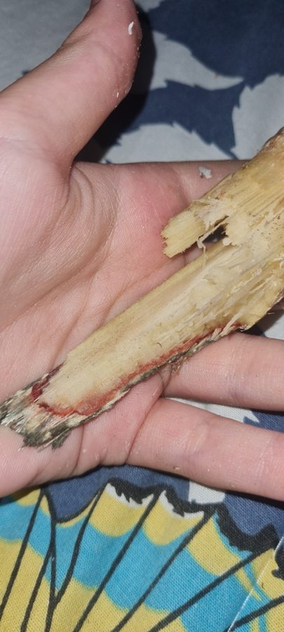

गन्ने का लाल सड़नSugarcane Red Rot
Colletotrichum falcatum · Glomerellaceae · FNG-0022

- Scientific nameवैज्ञानिक नाम
- Colletotrichum falcatum Went, 1893
- Familyकुल
- Glomerellaceae
- Hindiहिंदी
- गन्ने का लाल सड़न
- Local namesस्थानीय नाम
- ganne ka lal sadan, lal sadan, ganna sadan, red rot
- Status hereयहाँ की स्थिति
- native
- Movementआवागमन
- Resident, here all year
- IUCNIUCN
- not evaluated
- Reviewसमीक्षा
- audited and independently read
When to look कब देखें
Expected mainly in October, November, December, January, February, March.मुख्यतः अक्टूबर, नवंबर, दिसंबर, जनवरी, फ़रवरी, मार्च में अपेक्षित।
गन्ने का लाल सड़न / Sugarcane Red Rot
Colletotrichum falcatum Went — Glomerellaceae
गन्ने का लाल सड़न — गन्ने की सबसे आम आंतरिक बीमारी, जो अक्सर बाहर से दिखाई नहीं देती, पर अंदर जड़ खोद देती है। संक्रमित गन्ने को काटो तो अंदर से लाल-भूरा, गलता हुआ ऊतक निकलता है। चीनी मिल में यह गन्ना असली चीनी नहीं देता — खोई (bagasse) में ही गल जाता है। भारत में बिहार और पश्चिमी UP में सबसे अधिक नुकसान होता है, लेकिन पूर्वी UP में भी यह एक समस्या है। संक्रमित बीज का उपयोग न करना और अच्छी किस्मों का चुनाव इसका समाधान है।
Quick Identification त्वरित पहचान
| Feature | Description |
|---|---|
| External signs | Often NO external signs on stalk; leaf symptoms may appear as reddish or yellow stripe along leaf midrib (vein) in advanced infections |
| Internal lesion | Cut the stalk lengthwise: interior shows reddish-brown, dry rot; often with concentric rings or streaking |
| Stalk cross-section | When cut transversely, affected tissue appears as red-brown or maroon-coloured zones radiating from the vascular bundle |
| Lesion odour | May have a musty, fungal smell in advanced rot |
| Extent of infection | Can extend upward from the base through several internodes (sections); may reach height of 1–2 m or more |
| Progression | Internal rot may be extensive while plant appears healthy externally (hidden disease) |
Field tip: Red rot is a hidden disease. A sugarcane plant standing upright in the field may be rotted inside. Cut several stalks lengthwise (from a suspect field) and examine the interior. Red-brown discolouration radiating from the centre indicates red rot. The disease is most visible in late-season cane (January–March) that has been growing for 8–12 months.
हिंदी — कैसे पहचानें: गन्ने को अंदर से काटो तो लाल-भूरा, गलता हुआ हिस्सा। बाहर से दिखाई नहीं देता, पर अंदर सड़ा होता है। अक्टूबर-मार्च में।
Morphology and Symptomatology आकृति और लक्षण
Fungal structures (visible with microscope in culture and in infected tissue):
| Structure | Appearance |
|---|---|
| Conidiophore | Short, unbranched or branched; emerges from infected tissue |
| Conidium (spore) | Falcate (curved, sickle-shaped), 15–20 × 4–5 µm; hyaline (clear) to pale; distinctive shape gives species its name |
| Acervulus | Fruiting structure embedded in host tissue; bears spores in a cushion-like mass |
| Mycelium | Thread-like filaments spreading through vascular tissue; visible as reddish-brown network in cross-section |
| Appressorium | Specialized infection structure; may be present at sites of penetration |
Infection process:
- Infection source: Infected seed cuttings or contaminated tools during planting/harvesting
- Entry point: Through cut surfaces (damaged cuttings, tool wounds) or through the root-shoot junction
- Colonization: Fungus spreads through the vascular system (xylem vessels); causes disruption of water flow and nutrient transport
- Symptom development: Internal discolouration develops; external leaf symptoms may lag weeks behind internal rot
Disease progression:
- Early stage: Fungus colonizes vascular tissue; no external symptoms; can only be detected by cutting the stalk
- Advanced stage: Extensive internal rot; leaf colour may change (reddish or yellow); plant may wilt or die prematurely
- Late-season observation: At harvest (10–12 months after planting), severe infections are obvious as red-brown rot in the entire stalk
Life Cycle / Phenology जीवन चक्र
In eastern UP (sugarcane crop: year-round cultivation; disease peak October–March):
| Stage / Month | Event | Notes |
|---|---|---|
| February–March | Harvest previous crop; infected canes are cut and transported; infected tissue remains in soil | Inoculum persists in soil and crop residue; spores survive on tools and machinery |
| April–May | Preparation for monsoon planting; seed cuttings selected (CRITICAL: infected cuttings introduce disease) | Infected seed is the primary source of inoculum for new crop |
| June–July | Monsoon planting (seed cuttings planted); initial infection may occur at cut surfaces and root-shoot junction | Cool, moist conditions of monsoon support infection and early colonization |
| July–October | Cane grows; fungus colonizes vascular tissue silently; no visible symptoms; internal rot develops gradually | Disease is "hidden" during this period; no external signs to warn the farmer |
| October–March | OBSERVATION PERIOD — Disease becomes evident as internal rot in canes | Leaf symptoms (reddish midrib) may appear. Ripe cane is harvested; infection is visible when stalks are cut. |
| At harvest (10–12 months) | Heavily infected canes have extensive internal rot; damaged tissue yields no juice (or poor-quality juice); reduces sugar recovery | Milling: Rotted tissue causes problems in the mill; processing efficiency declines. |
| Storage | Infected cane deteriorates rapidly; disease progresses in stored cane if conditions are warm and moist | Fresh-pressed juice from infected cane may already contain mycelium |
Seasonality note: Red rot is more severe during and after the monsoon (post-monsoon to winter) because cool, moist conditions favor the fungus. Disease is slower in hot, dry months.
हिंदी — जीवन चक्र: बीज से शुरू होता है। बरसात में संक्रमित होता है। फसल के पूरे समय अंदर-अंदर सड़ता है। सर्दियों में काटते समय दिखाई देता है। अगली फसल के लिए संक्रमित बीज लेने से फिर से शुरू होता है।
Ecology and Substrate पारिस्थितिकी और आधार
Obligate plant pathogen: Colletotrichum falcatum is an obligate biotroph that requires living or recently dead sugarcane tissue for growth.
Moisture and temperature requirements:
- Optimal infection: 20–25°C, high humidity, cool conditions
- Rapid colonization: Occurs fastest in cool (20–25°C), moist conditions, especially in monsoon and post-monsoon
- Stress to fungus: >30°C slows growth; dry conditions inhibit spore production
- Survival: Fungus survives in infected seed cuttings, crop residue and soil for months; can persist through dry season in infected cane parts
Host specificity: Primarily affects sugarcane; can occasionally infect wild grass relatives but is not virulent on them.
Transmission:
- Primary: Infected seed cuttings (most common; effective control measure is use of disease-free seed)
- Secondary: Contaminated tools (machetes, knives) during harvesting; splashing of infected plant sap during manual operations
- Rare: Spore-mediated infection through root wounds in soil (not significant under field conditions in UP)
Agricultural / Human Relevance कृषि प्रासंगिकता
Economic impact:
- Yield loss: 10–30% depending on disease severity and cane age at infection
- Quality loss: Reduced sugar recovery; glucose fermentation in infected tissue lowers sucrose content
- India context: Red rot is endemic in sugarcane-growing regions (Uttar Pradesh, Bihar, Maharashtra); causes substantial annual losses estimated at ₹1,000+ crores
- Mill impact: Infected cane clogs mill machinery; processing time increases; efficiency declines
Management — in order of priority:
- Disease-free seed (MOST EFFECTIVE):
- Certified seed source: Use seed from recognized sugarcane seed farms (ICAR institutions, state seed agencies, or registered private seed producers)
- Seed treatment: Hot-water treatment (50°C for 2 hours) or biological treatment (bioagents) can reduce seed-borne infection
- Visual inspection: Before planting, inspect seed cuttings for reddish discolouration or rot; discard suspect cuttings
- Cost: Disease-free seed costs ₹500–800 per quintal (vs. ₹200–300 for farmer-saved seed); economic benefit justifies cost
- Resistant varieties (HIGHLY EFFECTIVE):
- Recommended in Uttar Pradesh: Co 86032, Co 7704, Co 8371, Co 94008, Co 97009, Co 99004 (all have high resistance)
- Avoid susceptible older varieties: CoH 86141, Co 85004
- Farmers should obtain certified seed of these varieties
- Varietal rotation: Change variety every 5–7 years to prevent pathogen adaptation
- Cultural practices:
- Tool sanitation: Disinfect machetes and cutting tools with flame or bleach between cuts, especially when cutting cane from different fields
- Field sanitation: Remove infected crop residue from previous crop; burn or bury; do not use for mulch in next planting
- Spacing: Adequate spacing reduces humidity within crop; facilitates air movement
- Irrigation: Avoid creating permanently wet conditions; allow soil surface to dry periodically
- Chemical and biological treatment (supplementary):
- Seed dressing: Carbendazim (Bavistin) or Trichoderma sp. (biological) applied to seed cuttings before planting
- Foliar spray: Not typically done for red rot; fungicide efficacy is limited because disease is internal
- Soil treatment: Trichoderma or Bacillus subtilis applied at planting may suppress soil-borne inoculum
- Integrated approach for farmers:
- Primary control: Use certified, disease-free seed of resistant variety
- Secondary control: Treat seed with hot water or fungicide before planting
- Ongoing: Maintain field sanitation; rotate varieties; use clean tools
- Monitoring: At harvest, cut several canes from each field; note percentage with internal rot; save disease-free cane for seed
Government support:
- Sugarcane Development Board (SDB) and state extension departments promote disease-free seed and resistant varieties
- Subsidies for certified seed in some states
हिंदी — रोकथाम: अच्छा, अभिनव बीज बोओ। साधारण आलू की कटाई की मशीन (मचेटे) को आग में तपा लो। पुरानी फसल की पराली निकालो। काटते समय हर गन्ने को हाथ से देखो।
Expected Locally स्थानीय रूप से अपेक्षित
Not a field record. Written from published accounts for eastern Uttar Pradesh. No confirmed local sighting yet — if you have seen it, that is what the atlas needs.
अभी तक स्थानीय पुष्टि नहीं। यह विवरण प्रकाशित स्रोतों से है, किसी अवलोकन से नहीं।
Red rot is expected in Basti and Ayodhya districts wherever sugarcane is cultivated, particularly in fields using farmer-saved or infected seed. Disease incidence varies with:
- Seed source (infected seed = high disease; disease-free seed = minimal disease)
- Variety grown (susceptible varieties show 20–40% infection; resistant varieties show <5%)
- Post-monsoon to winter conditions (cooler weather favors disease development)
In years with above-average monsoon rainfall and cool post-monsoon weather, disease severity in susceptible varieties can approach 50% of cane infected. Farmers using disease-free seed of resistant varieties avoid significant losses even in high-risk years.
Distribution वितरण
Global range: Found in tropical and subtropical sugarcane-growing regions worldwide, particularly where monsoon rainfall and cool post-harvest conditions occur.
In India: Endemic in all sugarcane-growing states; particularly severe in Uttar Pradesh, Bihar, Maharashtra and parts of Andhra Pradesh.
In Uttar Pradesh: Common in all sugarcane-growing districts; eastern UP (Basti, Gorakhpur) experiences significant disease pressure, especially in fields using infected seed.
In Basti district / eastern UP: Expected in sugarcane fields, particularly in post-monsoon cane (planted June–July, harvested January–March). Disease incidence depends heavily on seed source.
Research Questions शोध प्रश्न
- In your village, what percentage of sugarcane (at harvest) shows internal red rot when stalks are cut? / आपके गाँव में कटाई के समय कितने प्रतिशत गन्ने में लाल सड़न दिखता है? — Survey 10 farmers; examine 10 stalks per field; record infected percentage.
- Do farmers who use disease-free seed show less red rot than those who use farmer-saved seed? — Compare two farmers (one with certified seed, one without); measure disease incidence at harvest.
- Which sugarcane varieties are grown in your village, and which show the most red rot? — Survey variety names and disease percentages.
- Does seed treatment with hot water reduce red rot in farmer-saved seed? — Treat a batch of seed with hot water; plant alongside untreated seed; compare disease at harvest.
- At the local sugarcane crushing season, does the mill report problems with cane from fields known to have high red rot? — Ask the mill operator about cane quality and yield issues.
Similar Species मिलती-जुलती प्रजातियाँ
| Disease | How to tell apart | हिंदी |
|---|---|---|
| Smut (Ustilago scitaminea) | Black, sooty growth on emerging shoots ("whip"); appears as black powder at shoot emergence; very different appearance from red rot | काली धूल, अगली फसल में |
| Top Rot (Colletotrichum falcatum var. subbeanum or other Colletotrichum spp.) | Affects the growing point (top leaves); top leaves wilt and die; external symptom | पत्तियाँ ऊपर से मुरझाती हैं |
| Wilt (bacterial or vascular) | Plant wilts; leaves yellow; no red internal discolouration | पूरा पत्ता पीला, विल्ट |
Field rule: Red-brown internal discolouration in the stalk, extending upward from the base, visible when the cane is cut lengthwise, in cane harvested post-monsoon to winter = red rot. Every other sugarcane disease either affects the exterior, the top leaves, or produces black rather than red discolouration.
Taxonomy & Classification वर्गीकरण
Original description. Colletotrichum falcatum was described by Went in 1902. The species epithet falcatum (Latin: "sickle-shaped") refers to the distinctive curved shape of the spores (conidia).
Subspecies. No subspecies are formally recognized.
Family and order placement. Order Glomerellales, family Glomerellaceae. Colletotrichum is a genus of anthracnose fungi; related species infect cotton, mango, chili and many other crops.
Phylogenetic notes. Colletotrichum falcatum is closely related to C. subbeanum and other sugarcane anthracnoses, but is distinguished by spore morphology and host specificity. Molecular studies confirm a sister relationship with C. lindemuthianum (bean anthracnose).
IUCN status rationale. Not evaluated. As an obligate plant pathogen, its conservation status is not applicable. Its management is an agricultural priority.
Photo Gallery फोटो गैलरी
Photos needed आवश्यक फोटो
- [ ] Sugarcane stalk cut lengthwise showing red-brown internal rot (गन्ना काटा हुआ)
- [ ] Cross-section of stalk showing red-brown vascular discolouration (तिरछा कट)
- [ ] Comparison of healthy and infected stalks side-by-side (तुलना)
No photos yet — add field photos to media/species/red_rot/ and run node scripts/sync_photos.js.
References संदर्भ
- Went, F.A.F.C. (1902). Colletotrichum falcatum Went., the cause of red rot of sugarcane. Verhandelingen der Koninklijke Akademie van Wetenschappen, Amsterdam.
- Viswanathan, R., Bhattacharyya, B.N. & Rao, G.P. (eds.) (2002). Sugarcane Pathology. Jain Brothers, New Delhi. [comprehensive disease review for India]
- Indian Council of Agricultural Research — Sugarcane Research Institute (2021). Management of Red Rot and Other Sugarcane Diseases. ICAR-SRI, Coimbatore.
- National Institute of Plant Health Management (2019). Field Guide to Sugarcane Diseases. NIPM, Hyderabad.
- Singh, S.B. & Viswanathan, R. (2010). Breeding for Disease Resistance in Sugarcane. Sugarcane Development Board, Government of India.
- GBIF Occurrence Data — Colletotrichum falcatum, India (2026).
Source file: species/fungi/molds/red_rot.md